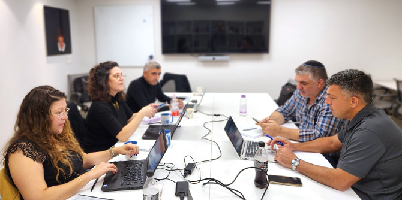
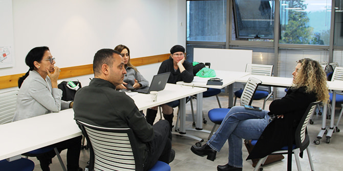
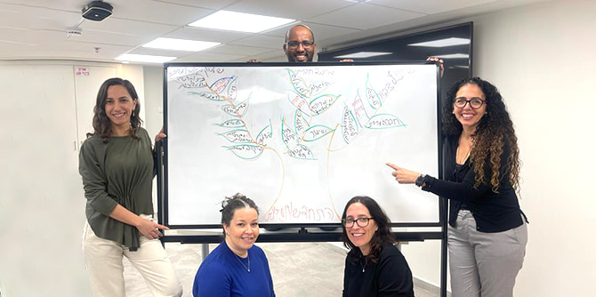
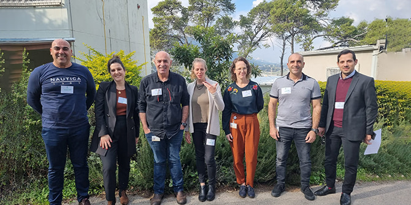

 קבוצת תעסוקה ופיתוח כלכלי של עמיתי שתי התוכניות (צילום: דנה קליינמן)
בפרויקט לימודי זה מועברת האחריות לעמיתים, שמקיימים למידה אקטיבית ועצמאית ומנהלים בלעדית את תהליך החקר מתחילתו ועד סופו, באופן שמחבר אותם לאזור באמצעות היכרות עומק וחקר תאורטי ומעשי של אתגרים וסוגיות בוערות.
פרויקט ח"צ בתוכנית למנהיגות אזורית ובתוכנית למנהיגות בשירות הציבורי
במקורו היה פרויקט ח"צ חלק ממערך הלימודים של כל תוכנית במרכז בנפרד, אך השנה הוחלט לראשונה לקיימו תוך שיתוף פעולה בין תוכנית מנדל למנהיגות אזורית בצפון ובין תוכנית מנדל למנהיגות בשירות הציבורי בצפון. המהלך המשותף בין התוכניות נרקם מתוך הבנה שהעמיתים אמנם פועלים בתחומים שונים, אך באותו מרחב פעולה והשפעה, ויש במהלך כדי להעמיק את האופן שבו הם רואים את המציאות, ולהרחיב ולחזק את הרִשְׁתִּיוּת ואת אפשרויות שיתופי הפעולה ביניהם כדי להשיג השפעה משמעותית בשטח.
ארבעה צירי תוכן מנחים במסלול ח"צ את ההתבוננות על הצפון: השכלה וחינוך, פיתוח כלכלי ותעסוקה, רפואה ובריאות, ושלטון מקומי. העמיתים משתי התוכניות חולקו לצוותים, וכל צוות חקר את אחד מארבעת הצירים באמצעות ניתוח של לפחות שלוש מתוך חמש תמות: הבנה של מאפייני הצפון הייחודיים; היכרות עם החברה המגוונת באזור; התוודעות למנהיגות המקומית והאזורית; סקירה של הצפון על ציר הזמן; ובחינת החלטות הממשלה שהתקבלו בנושא.
חלוקת העמיתים לצוותים נעשתה בשיקול דעת ותוך הקפדה שתחום המחקר שלהם אינו תחום עיסוקם, זאת כדי שנקודת מבטם תהיה שונה ותאפשר גיבוש תובנות ואולי אף הצעות לפתרונות יצירתיים ומקוריים. נוסף על כך, במסגרת הלמידה המשותפת קיבלו העמיתים שיעורי בחירה להשלמת המעטפת התומכת לעבודת החקר: הרצאה בנושא "העברת מסרים – עקרונות להכנת מצגת טובה" שנועדה לסייע לדייק את אופן הצגת הסוגייה הנחקרת, ושיעור היכרות עם תוכנת canva, לבניית מצגת מעוצבת.
חשיפה ראשונה של הפרויקט התקיימה בריטריט הפתיחה של כל תוכנית, ולאחריו, בסוף נובמבר, נערך מפגש הכנה שבו התוודעו העמיתים זה לזה וקיבלו חומרי רקע ראשוניים לחקר העיוני של התחום שלהם. במפגש השני החליטו הצוותים על הנושא המדויק שיתמקדו בו, הכינו תוכנית עבודה וחלקם, אף קיימו פגישות מקוונות עם אנשי מפתח רלוונטיים. בהמשך מצפה להם יום שטח שיכלול ראיונות ומפגשים שגם ישקפו עבורם את האתגרים והחסמים של הנושא הנבחר, וגם יעשירו את ההתבוננות שלהם עליו ויאפשרו להתוות כיוונים לשינוי ולהציע פעולות מעשיות לשיפור.
בסיום התהליך יציגו הצוותים את עבודתם ביום מסכם, יפרטו על הנושא, יסבירו מדוע החליטו לבחור בו ומהן התובנות שאליהן הגיעו במסגרת החקר, ואף יציעו דרכי פעולה וכלי מדיניות להתמודדות עם האתגרים שנתקלו בהם.
 קבוצת בריאות של עמיתי שתי התוכניות עם מיכל רייקין (צילום: רינת פיליפ)
חקר הצפון בתוכנית מנדל למנהיגות חברתית בצפון
בתוכנית מנדל למנהיגות חברתית בצפון, למידה בפעולה היא הציר המרכזי למיצוי פוטנציאל ההשפעה של העמיתים, שמשכלל ומעצים את תחושת האחריות והשליחות, כדי להוביל ולהיטיב עם החברה בצפון ובכלל. השילוב בין ידע להתנסות מעשית מכשיר את העמיתים לפעול מתוך התובנות והדגשים החדשים שרכשו, מרחיב את מוטת ההשפעה שלהם, ומסייע להם להכיר את החברה המגוונת בצפון ולהעמיק באופן עצמאי את יכולות הפעולה המיטיבה. בלבו של ציר זה לימוד עומק של הצפון ואתגריו.
תרגיל השטח נפרס על פני שנת הלימודים בקבוצות עמיתים מגוונות, החוקרות את הצפון מפרספקטיבות שונות ומציעות פתרונות לאתגרים ולהזדמנויות. לאחר סיורי הפתיחה "מסע לחקר הצפון" יצאו העמיתים לעבודה בקבוצות על-פי ארבע סוגיות מרכזיות ורלוונטיות לפעולה ולהובלה בחברה מגוונת בצפון: בריאות, חינוך והשכלה, תכנון ודיור, פיתוח כלכלי ותעסוקה.
 עמיתי התוכנית החברתית מציגים את תוצרי הפעימה הראשונה במסגרת חקר הצפון
בשבוע הראשון של דצמבר סיימו את הפעימה הראשונה "למידה יחפה", שבמרכזה מיפוי וחקר השדה והתחום, איסוף ידע, העלאת שאלות ושימוש במידע ובנתונים הרלוונטיים לסוגיה, בהקשר הצפוני. כמו כן התקיים יום שיא, ובמהלכו הציגו העמיתים את התוצרים וקיבלו משוב מפאנל מומחים בתחומים השונים.
בשבוע האחרון של ינואר יתחילו העמיתים את הפעימה השנייה של תרגיל החקר: סיפורי מקום – אפיון הסוגייה דרך העמקה בקהילה או במקום גאוגרפי בצפון, ויציגו את התוצרים באמצע חודש פברואר.
בהמשך לתרגיל השטח הקבוצתי מתקיים תרגיל אישי המאפשר לעמיתים להתמקד ולהעמיק בחקר סוגיה חברתית הבוערת בתוכם – המשגה, למידה של הצד התאורטי, בירור עמדות, חקר מקרים, מפגשים עם שחקנים מרכזיים והיכרות עם ארגונים רלוונטיים. בסוף התהליך יציג כל עמית את החקר ואת כיווני ההשפעה שאליהם הוא מכוון בסיום התוכנית ובשנים לאחר מכן.
ציר הלמידה בפעולה כולל ליווי של מנטורים בקיאים בתחומים ובסוגיות החקר שבהן העמיתים מתמקדים, נוסף על צוות של מומחים המספקים משוב וייעוץ נקודתי, במידת הצורך.

עמיתי שלושת התוכניות של מרכז מנדל למנהיגות בצפון ביום משותף (צילום: רינת פיליפ)
{kind=link}
{kind=link}
{kind=link}
{kind=link}